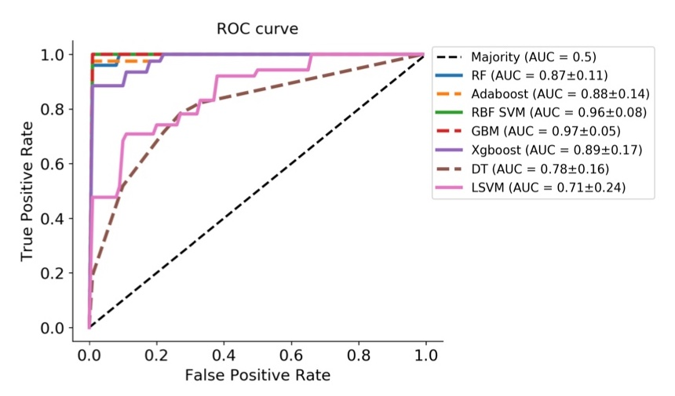
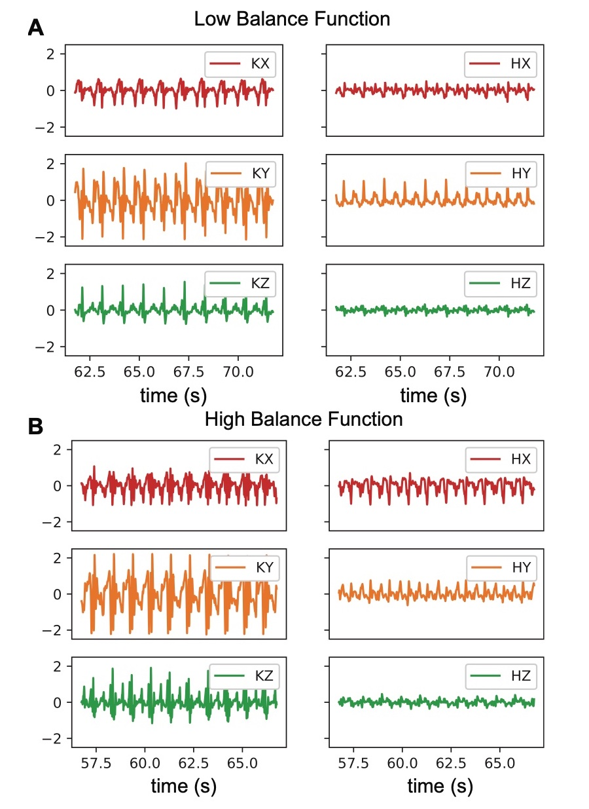
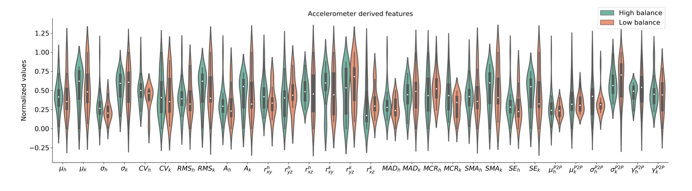

Abstract
The incidence of fall-related injuries in older adults is high. Given the significant and adverse outcomes that arise from injurious falls in older adults, it is of the utmost importance to identify older adults at greater risk for falls as early as possible. Given that balance dysfunction provides a significant risk factor for falls, an automated and objective identification of balance dysfunction in community dwelling older adults using wearable sensor data when walking may be beneficial. In this study, we examine the feasibility of using wearable sensors, when walking, to identify older adults who have trouble with balance at an early stage using state-of-the-art machine learning techniques. We recruited 21 community dwelling older women. The experimental paradigm consisted of two tasks: Normal walking with a self-selected comfortable speed on an instrumented treadmill and a test of reflexive postural response, using the motor control test (MCT). Based on the MCT, identification of older women with low or high balance function was performed. Using short duration accelerometer data from sensors placed on the knee and hip while walking, supervised machine learning was carried out to classify subjects with low and high balance function. Using a Gradient Boosting Machine (GBM) algorithm, we classified balance function in older adults using 60 seconds of accelerometer data with an average cross validation accuracy of 91.5% and area under the receiver operating characteristic curve (AUC) of 0.97. Early diagnosis of balance dysfunction in community dwelling older adults through the use of user friendly and inexpensive wearable sensors may help in reducing future fall risk in older adults through earlier interventions and treatments, and thereby significantly reduce associated healthcare costs.
Core contributions
- 1Balance from walkingBalance function is predicted from ordinary walking, not from a separate clinical balance test.
- 2Just two sensorsAccelerometers on the right hip and knee, recording for 60 seconds.
- 3Clinical ground truthLabels come from the motor control test, a sensitive measure of reactive balance in older adults.
- 4Seven classifiers comparedDecision tree, random forest, linear and RBF SVM, AdaBoost, GBM and XGBoost, with 5-fold cross-validation.
- 591.5% accuracyGBM reached 91.5% accuracy and an AUC of 0.97, even though no single feature differed between the groups.
- 6Low costA cheap wearable could flag balance problems early, without specialist equipment or staff.
Method
1Participants and sensors
We recruited 21 community dwelling older women. Each walked at a comfortable, self-selected speed on an instrumented treadmill, with accelerometers on the right hip and knee recording at 148 Hz. Each also took the motor control test (MCT), which measures how quickly a person reacts to a sudden platform shift. Using the average MCT latency for older adults (143.4 ms) as the cut-off, 12 women had high and 9 had low balance function. Two walking trials per person gave 82 one-minute segments.

2Features
After band-pass filtering, we computed classic gait features from each sensor: mean, standard deviation, coefficient of variation, root mean square, autocorrelation, mean amplitude deviation, signal magnitude area, signal energy, correlations between axes, and peak-to-peak statistics. No single feature differed significantly between the groups, which is why we turned to machine learning.
Show the feature distributions (paper Fig. 2)

3Models
We compared seven classifiers with 5-fold cross-validation, scoring accuracy, F1 score and AUC.
Results
- GBM is best: 91.5% accuracy, an F1 score of 0.89 and an AUC of 0.97.
- RBF SVM is a close second with the same accuracy and an AUC of 0.96; boosting beat the random forest used in earlier fall-risk studies.
| Classifier | Accuracy | F1 score | AUC |
|---|---|---|---|
| Gradient boosting (GBM) | 0.915 | 0.893 | 0.965 |
| SVM, RBF kernel | 0.915 | 0.889 | 0.957 |
| XGBoost | 0.902 | 0.899 | 0.893 |
| Random forest | 0.890 | 0.860 | 0.865 |
| AdaBoost | 0.866 | 0.858 | 0.875 |
| Decision tree | 0.780 | 0.709 | 0.782 |
| SVM, linear | 0.646 | 0.600 | 0.705 |
Talk
BibTeX
@inproceedings{hu2020exploration,
title = {Exploration of Machine Learning to Identify Community
Dwelling Older Adults with Balance Dysfunction Using
Short Duration Accelerometer Data},
author = {Hu, Yang and Bishnoi, Alka and Kaur, Rachneet and
Sowers, Richard and Hernandez, Manuel E},
booktitle = {42nd Annual International Conference of the IEEE
Engineering in Medicine \& Biology Society (EMBC)},
pages = {812--815},
year = {2020},
doi = {10.1109/EMBC44109.2020.9175871}
}Acknowledgments
We would like to thank all of the subjects who participated in this study. We would also like to thank Yanqing Lyu and Nicole Cho for their contributions to the study, and the Campus Research Board for financial support of this work.